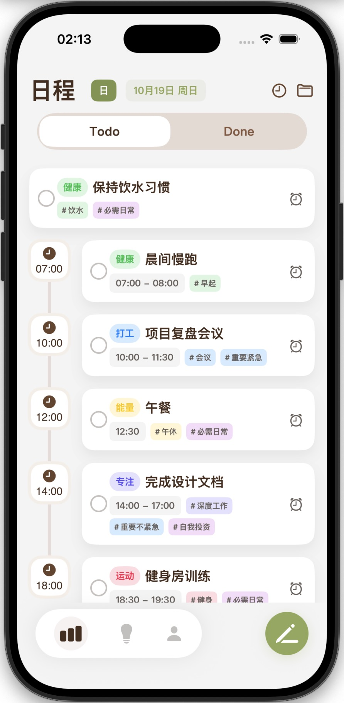
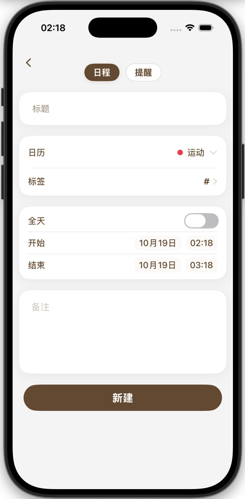
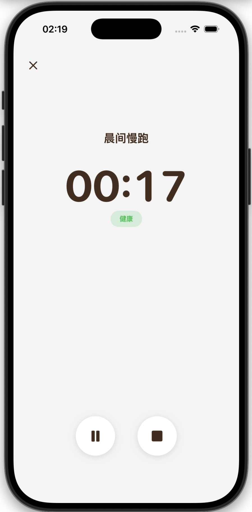
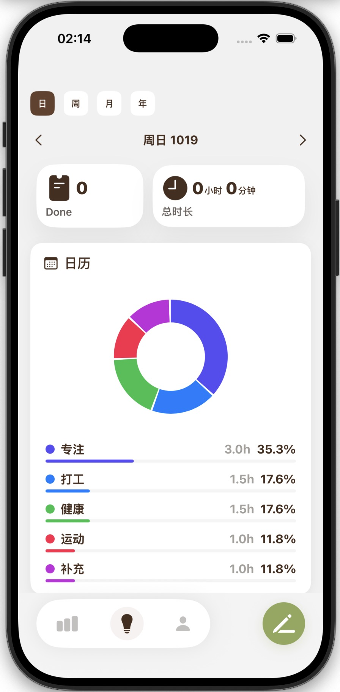
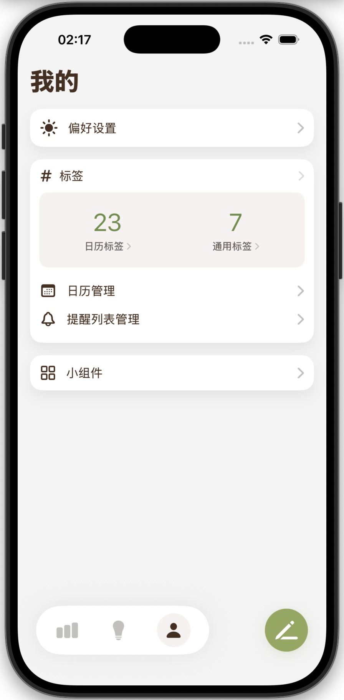

优雅的时间线任务管理 ⏰✨
让每一刻都井然有序，用时间线重新定义待办事项
直观的时间线展示，让您一眼掌握今天、本周和未来的所有任务安排
灵活的标签系统，支持自定义分类和颜色，让任务管理更加个性化
无缝同步 Apple 提醒事项，在熟悉的 Apple 生态中管理所有待办
与 Apple 日历双向同步，事件和任务统一管理，不再遗漏
流畅的滑动手势，轻扫即可完成、延期或删除任务
专注于当前任务，提升工作效率，记录每一次专注时光
可视化统计分析，了解时间分配，持续优化工作习惯
原生 SwiftUI 打造，流畅动画，深色模式完美支持




在设置页面中选择要同步的提醒事项列表，授权后即可自动同步。
所有数据都存储在您的设备本地，我们不会上传您的任何个人信息。
Chrono 需要 iOS 15.0 或更高版本。